MedTech App
O app do médico para o plantão e para a rotina: acompanhar paciente, condutas com prescrição, ferramentas, plantões e finanças, num app só.
A demonstração abre sem cadastro, com dados fictícios. Para o teste, toque em Criar conta na tela de entrada; não pede cartão.
- ClínicaCondutas, Ferramentas e Exames
- GestãoPlantões e Finanças
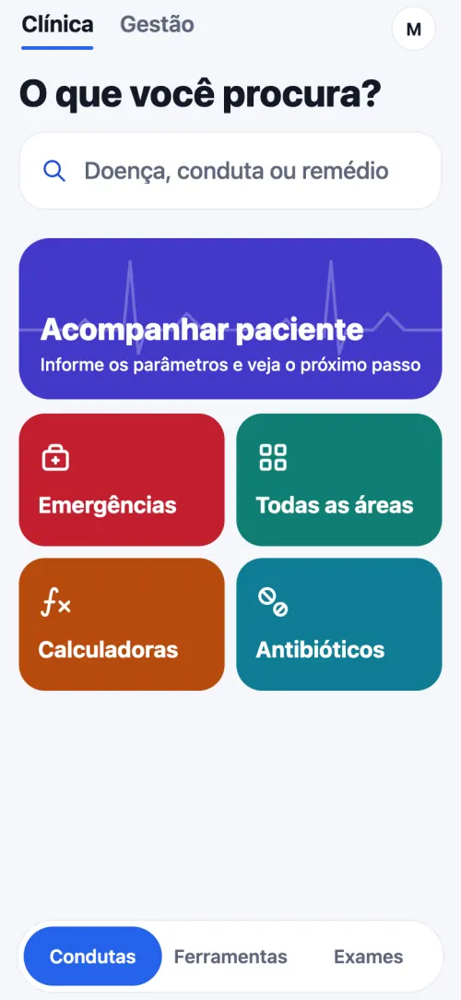
No plantão
Para o médico da emergência e da enfermaria.
Acompanhar paciente
- Você informa os parâmetros atuais e o app mostra o próximo passo, por regra escrita a partir da diretriz, sem IA.
- Cetoacidose diabética, estado hiperosmolar, sepse, síndrome coronariana aguda, mal epiléptico, hiponatremia e anafilaxia.
- Relógio dos próximos exames, evolução em gráfico e texto de passagem de plantão.
- Os dados do paciente ficam só no aparelho.
Condutas
- 274 condutas, por tópicos: Tratamento, Fluxogramas, Prescrição, Diagnóstico e os demais.
- Funcionam sem internet.
- Prescrição pronta por cenário, com conferência por regra: alergia, teto de dose, função renal pela CKD-EPI 2021, gestação, idoso e interações graves.
Ferramentas
- Calculadoras e escores.
- Antibióticos: dose e correção pela função renal.
- Gasometria, ventilação mecânica, ECG e POCUS passo a passo.
- Interações, CID-10, cuidados paliativos e orientações ao paciente.
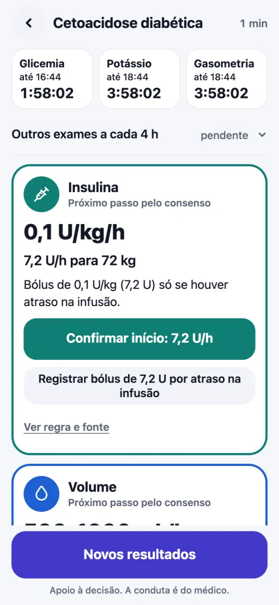
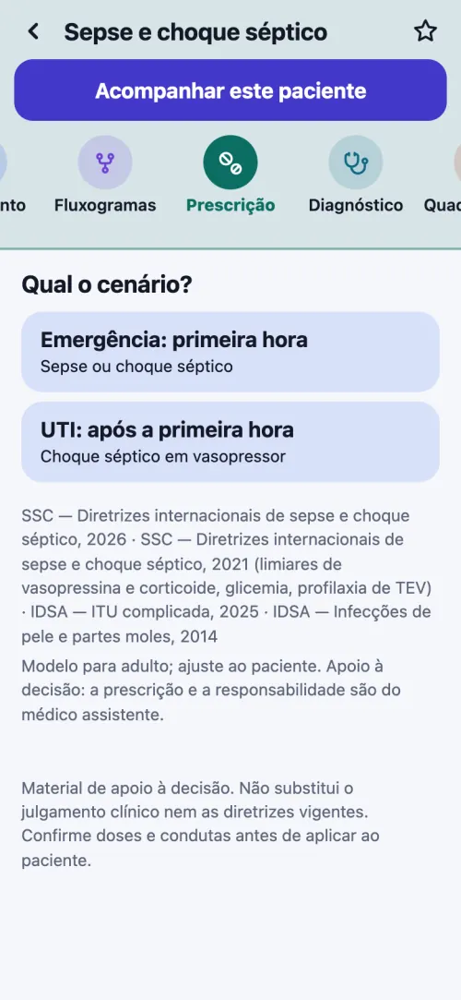
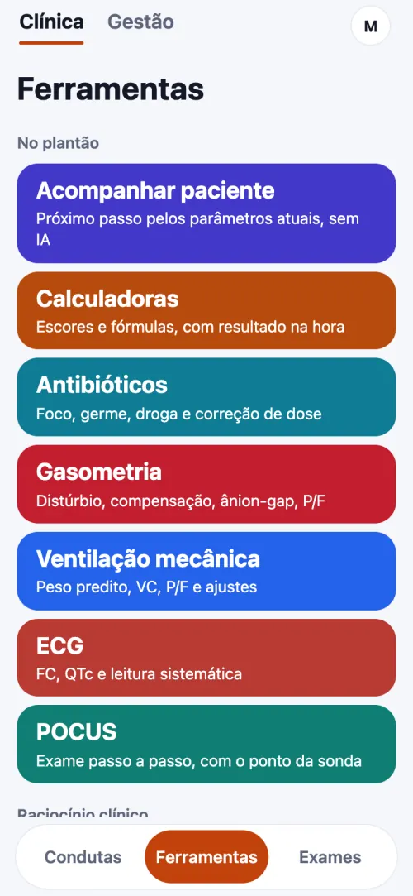
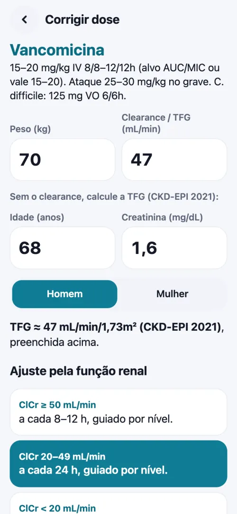
Telas reais do app, com dados fictícios. Apoio à decisão; a conduta é do médico.
Nos primeiros plantões
Para o recém-formado e o interno. Em condutas como sepse, TEP, IAM com supra, AVC isquêmico e parada cardiorrespiratória, a doença abre com uma camada didática antes do texto completo.
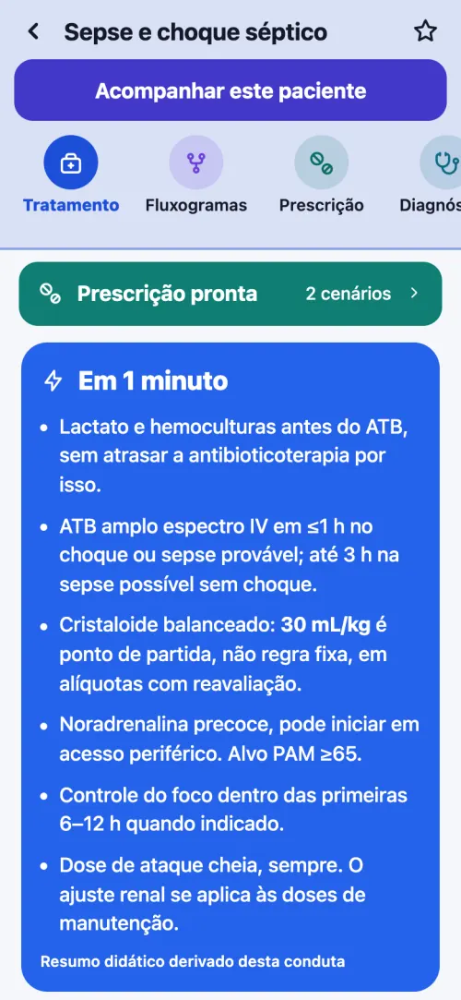
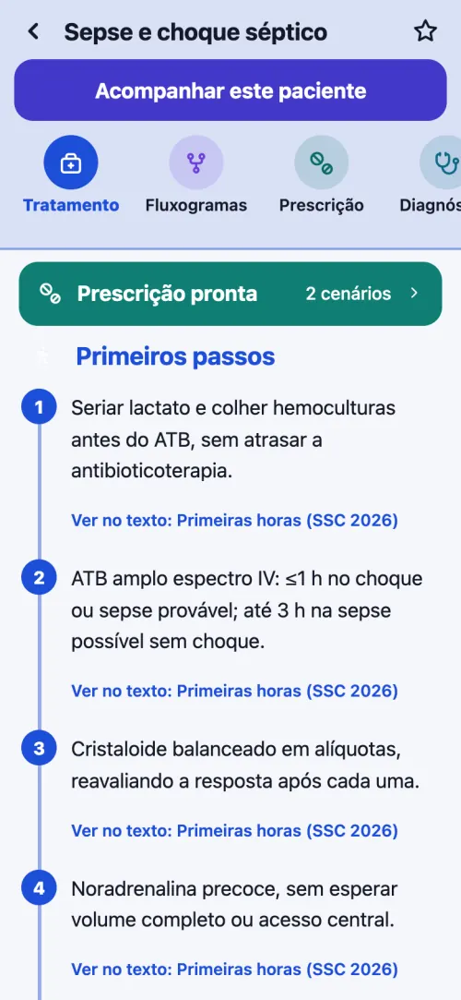
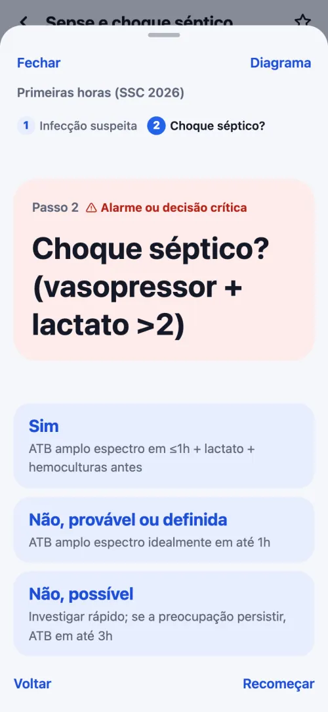
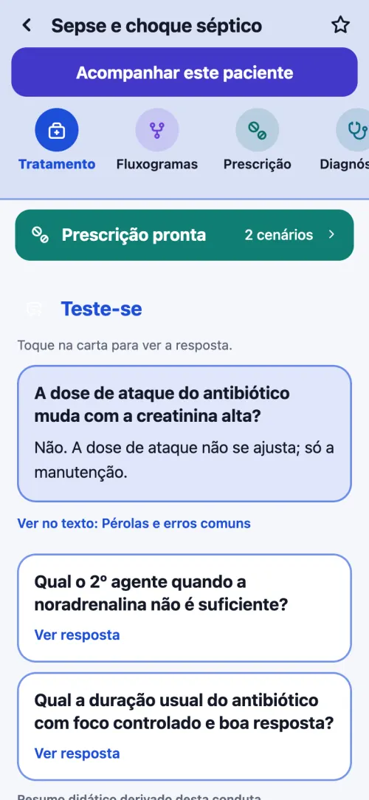
Telas reais do app, com dados fictícios. Apoio à decisão; a conduta é do médico.
Exames
Mande a foto do ECG ou da imagem e a IA aponta os achados, para estudar.
Para estudo, não é laudo. A IA pode errar.
Plantões e finanças
Na área Gestão, separada da Clínica.
Plantões
- Calendário do mês com os plantões lançados.
- Quanto falta receber e quando cai o próximo crédito.
- O próximo plantão, com local e horário.
Finanças
- Resumo do mês: o que entrou, o que saiu e o saldo.
- Cartões e parcelas.
- Dívidas e orçamento.
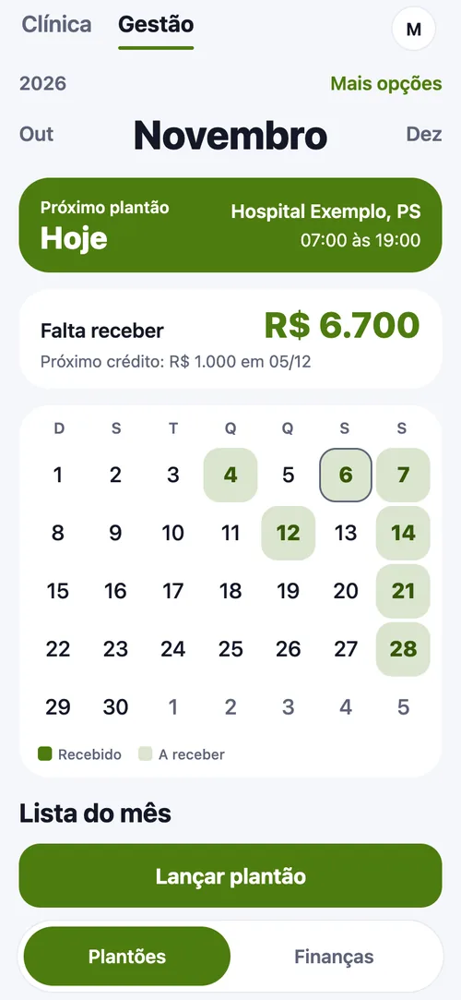
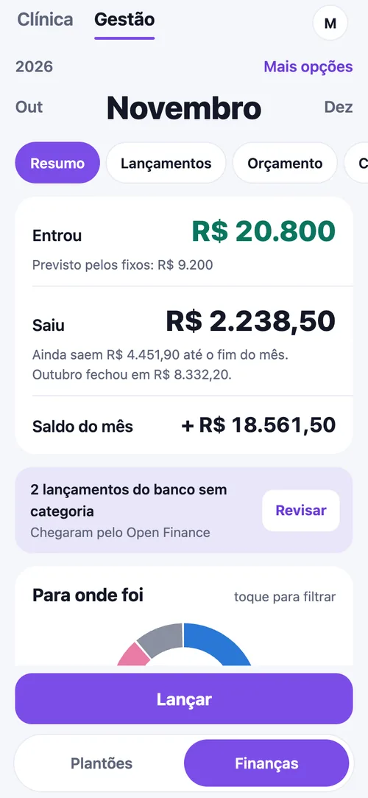
Telas reais do app, com dados fictícios.
Como começar
- Veja funcionando
A demonstração abre sem cadastro, com dados fictícios.
- Crie a conta
Em medtechbr.com.br/medtech, toque em Criar conta. São 7 dias de teste, sem cartão e sem cobrança automática.
- Instale no celular
Adicione à tela inicial pelo navegador. No computador, use pelo navegador. Passo a passo
Planos e valores
R$ 39,90 por mês ou R$ 399 por ano. Assinar o mensal · Assinar o anual
Mensal no cartão, renova sozinho · Anual em Pix, cartão até 12x ou boleto
- 7 dias de teste sem cartão
- Pagamento processado pelo Mercado Pago
- Sem fidelidade
- Desistência em 7 dias com reembolso total
- Cancelamento pelo portal
Dúvidas sobre pagamento, cancelamento ou instalação: página de Ajuda.